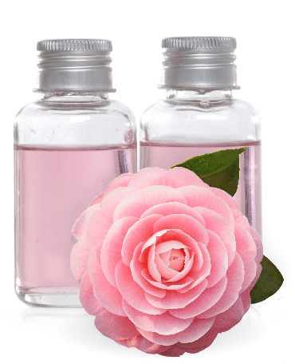

<!DOCTYPE html>
<html>
<head>
    <meta charset="utf-8">
    <link href="css/animate.min.css" rel="stylesheet">
    <link href="css/fonts.css" rel="stylesheet">
    <link href="css/style.css" rel="stylesheet">
    <title></title>
</head>
<body>
    <div class="av-wrapper">
        <div class="av-header">
            <div class="av-special">
                <span>Специальный проект</span>
            </div>
            <div class="av-title">
                <span>секрет ее молодости:</span>
            </div>
            <div class="av-sub-title wow slideInRight" data-wow-delay="0.5s"
            data-wow-duration="2s">
                <span>чем полезны косметические масла?</span>
            </div>
        </div>

        <div class="av-block-one">
          <div class="av-content">
            <p>
              <span class="av-dropcaps">В</span>
              большом городе сложно сохранить здоровый и цветущий цвет лица. Даже если вы ведёте здоровый образ жизни, кожа будет далека от идеальной.
           </p>
           <p>
             Зато на отдыхе, под воздействием чистого воздуха и морской воды,
             она моментально преображается — становится гладкой и подтянутой. Происходит это благодаря микроэлементам и кислороду, который насыщает кожу. Как добиться такого же эффекта в повседневной жизни?
           </p>
           <p>
             Вы наверняка замечали, что в некоторых странах женщины выглядят молодо, хотя ничего особенного со своей внешностью не делают? Зато они используют натуральные местные средства — масла, целебную глину. То есть, все, что насыщает кожу минералами и полезными элементами.
           </p>

           </div>
        </div>

        <div class="av-block-two">
          <div class="av-oil-one">
            <div class="av-content wow fadeInRight" data-wow-delay="0.5s" data-wow-duration="2s">
              Лучшим косметическим маслом считается розовое. Самое «родственное» для кожи масло. И самый ценный продукт в косметологии.
            </div>
            
          </div>

          <div class="av-oil-two">
            <div class="av-content wow fadeInRight" data-wow-delay="0.8s" data-wow-duration="2.3s">
              Масло камелии много веков используют в Японии и Китае.
              Оно увлажняет и питает сухую кожу.
            </div>
            
            
          </div>

          <div class="av-oil-three">
            
            
            <div class="av-content wow fadeInRight" data-wow-delay="0.5s" data-wow-duration="2s">Аргановое масло известно и популярно на Востоке. В Марокко его называют эликсиром молодости. Стимулирует выработку коллагена.</div>
          </div>

          <div class="av-oil-four">
            
            
            <div class="av-content wow fadeInLeft" data-wow-delay="1.3s" data-wow-duration="2.3s">Масло баобаба известно увлажняющим эффектом. Не зря его используют женщины сухих и жарких африканских стран. Масло также имеет регенерирующее действие.</div>
          </div>

          <div class="av-oil-five">
            
            
            <div class="av-content wow fadeInRight" data-wow-delay="1.5s" data-wow-duration="2s">Масло маракуйи высоко ценится за содержащуюся в нем фруктовую кислоту, которая эффективно очищает роговой слой от омертвевших клеток.</div>
          </div>

          <div class="av-oil-footer">
            <div class="wow slideInLeft" data-wow-delay="2s" data-wow-duration="2s"></div>
            
            <div class="av-content wow fadeInUp" data-wow-delay="1.5s" data-wow-duration="2s">
            Собрав в одно средство пять драгоценных масел и усилив их сывороткой, Avon создали революционное средство.
            <br/>В чем же его революционность?
            </div>
        </div></div>

        <div class="av-block-three">
          <h2 class="av-title">ПРЕКРАСНОЕ СОЕДИНЕНИЕ</h2>
          <div class="av-content">
            <div class="av-intro-text wow fadeInRight" data-wow-delay="0.5s" data-wow-duration="2s">
              <span>Как сказал Пушкин:<br/></span>
              <span>«Они сошлись. Волна и камень,<br/></span>
              <span>Стихи и проза, лед и пламень…»</span>
            </div>
            <div class="av-text">
              Благодаря усилиям научно-производственной лаборатории Anew стало возможно соединить две разные стихии. Дополняя друг друга, этот дуэт создает неповторимый по составу продукт, в котором сочетаются и водорастворимые, и жирорастворимые компоненты. До смешивания эти два средства сохраняют свою структуру, не окисляясь от соприкосновения с воздухом, а в момент соединения и нанесения усиливают эффективность друг друга.
            </div>
          </div>
        </div>

        <div class="av-block-four">
          
          <div class="av-content">
            <p>«Почему достаточно использовать средство один раз в день? Потому что количество попадающих в кожу компонентов, хоть и биомиметичных, биосовместимых, достаточно высокое и требует времени на их усвоение и применение»,
              <span>— поясняет косметолог Светлана Ковалева.</span></p>
            <p>«Как использовать — смешать Двойной эликсир в ладонях перед нанесением. Почему важно смешивать? Это дает возможность двум разным текстурам стать одним целым и начать работать совместно, усиливая эффект,
              <span>— продолжает Светлана Ковалева. — </span>
              Важно не только смешать, но и нанести крем легкими массажными движениями».</p>
          </div>
          <div class="av-extra-content">Кроме того, в составе изобретения — богатые минералами и знаменитые своими косметическими свойствами золото и черный жемчуг. Такой мощный заряд энергии не оставит признакам старения ни одного шанса.</div>
        </div>

        <div class="av-block-five">
          <h2 class="av-title">5 ПРИЧИН ИСПОЛЬЗОВАТЬ
          <br/>Двойной Эликсир от avon</h2>
          <div class="av-content">
            <div class="av-left">
              <div class="av-item">
                <h4 class="av-reason-title"><span class="av-dropcaps">1</span>Одно средство заменяет крем и сыворотку</h4>
                <p>Это не только удобно, но и экономично. Как сыворотка это средство высококонцентрированное и легчайшее по текстуре, действует почти сразу и высокоэффективно. С другой стороны, за счет композиции косметических масел позволяет создать длительный комфорт, защитить и увлажнить кожу подобно крему.</p>
              </div>

              <div class="av-item">
                <h4 class="av-reason-title"><span class="av-dropcaps">2</span>Экстракт платины и черной жемчужины</h4>
                <p>Они являются источником легко усваиваемых и разнообразных аминокислот, витаминов и антиоксидантов, которые не только обеспечивают кожу полуфабрикатом для построения макромолекул дермы, но и нормализуют микроциркуляцию, блокируют окислительный стресс.</p>
              </div>

              <div class="av-item">
                <h4 class="av-reason-title"><span class="av-dropcaps">3</span>Сыворотка и масло, соединяясь, активизируют работу более 100 миллионов клеток</h4>
                <p>Что это значит? Разнообразие компонентов в составе средства не оставляет без внимания самые разные клетки кожи: как клетки эпидермиса, так и клетки дермы.</p>
              </div>

              
              
          </div>

            <div class="av-item-column clearfix">
              
              <div class="av-content">
                <h4 class="av-reason-title"><span class="av-dropcaps">4</span>Формула с пятью драгоценными маслами: розы, камелии, аргании, баобаба, маракуйи</h4>
                <p>Эти масла ценят за высокое содержание витаминов А, D, E, рициновой кислоты (мощное заживляющее средство, активизирующее регенерацию клеток), как прекрасный источник полиненасыщенных и самых полезных для красоты и молодости кожи жирных кислот Омега. Все эти масла питают и укрепляют кожу, мгновенно делая ее мягкой и ровной.</p>
              </div>

              <div class="av-poster wow slideInUp" data-wow-duration="2s" data-wow-delay="0.5s">
							<div class="av-poster-q">
								
							</div>
							<div class="av-poster-content">
								<p>Я открыла для себя эликсир молодости! Это новое необычное средство Anew превращает уход за лицом в настоящее удовольствие благодаря нежной текстуре и чудесному аромату.</p>
                <p class="av-poster-name"><span>Илзе Лиепа</span>, прима балета</p>
              </div>
						</div></div>

            <div class="av-item av-item-final">
              <h4 class="av-reason-title"><span class="av-dropcaps">5</span>Видимый эффект сразу  и надолго</h4>
              <div class="av-content">
              <p>Мгновенно разглаживает и питает кожу. За неделю восстанавливает эластичность. За две недели сокращает морщины и подтягивает контур. За 2-3 месяца вы получите идеальный овал лица без морщин.
              <br/>Все другие сыворотки часто используются в паре с кремом, чтобы усилить эффект. Avon стал первым, кто предлагает два в одном — революционное средство Двойной эликсир — это масло (в состав которого входят пять драгоценных натуральных масел) и сыворотка вместе. Результат вы заметите уже через неделю.</p>
            </div>
          </div>


          </div>
        </div>


    </div>
    <script src="js/jquery.min.js">
    </script>
    <script src="js/wow.min.js">
    </script>
    <script>
    new WOW().init();
    </script>
</body>
</html>
